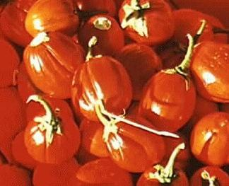
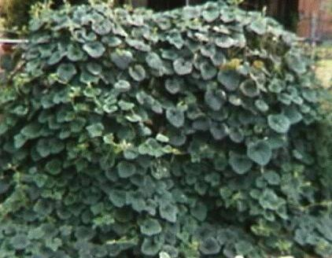
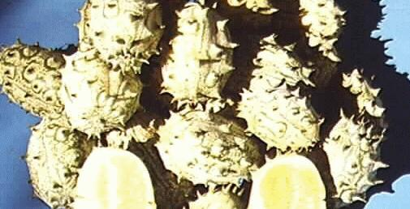

Warning: This is the humor section of larger site devoted to seed methodology and practice. If you are wandering about without your sense of humor, you are likely to find some of this material objectionable. It is just weedy herbiage, after all.
Over the Years, I have grown edible plants from many other countries, as much for the pleasure of growing new plants from seed as for experimenting with new flavors. What I have learned in this effort is that edible plants from around the world require a great deal of processing in the kitchen, often lose all of their nutritive value in that process, and just as often, fail to taste good enough to be worth the bother. Naturally, I suspect that people in North America and Western Europe eat much better food than the rest of the world, because of what we are able to grow. The bodies of people in less developed nations seem less developed. Is there a link between food and social institutions?, between food and industrial output?, between food and culture, religion, and politics, etc.? Did I hear someone say that "you are what you eat"?

Here is a description of just three of the edibles that I don't eat.Solanum integrifolium, aka 'ruffled tomato' or 'tomato egg plant' looks exactly like S. melongena 'eggplant' as it grows. Leaf shape, stems, etc. are identical. The flower is white instead of purple, and not quite as large in overall diameter. The fruit starts out a rich bright green, about as large as a goose egg, but then turns a brilliant orange red color that is most attractive. I think the fruit is edible, but I didn't find anything in it that I wanted to eat. It's worth growing for its ornamental value, is not fussy, and relatively care free to grow. The fruit is comfortable to hold or play catch with, and I suspect that a pair of them would make a remarkably realistic addition to certain public statuary. The environment and the space required to grow this plant is the same as for regular eggplant, which you may as well grow. Eggplant is one of my favorite foods, so it may be that I am just prejudiced against poor substitutes.
Momordica charantia, aka 'balsam pear' or 'bitter melon' is a well behaved vine that climbs with tendrils. It is not as vigorous as Ipomoea or Dolichos, though it did grow to 15 ft. high here in Chicago. The fruit is light green, covered with lumpy-bumps, 5 to 7 inches long, and must be picked before the blossom end begins to change color. When overripe, it turns orange throughout, except for the seeds. The seeds are shaped like heraldic shields and are encased in a dark red slimy jelly. The fruit opens of its own accord to reveal the red globs contrasting with the orange flesh. It is worth seeing but not much more. Yes, the fruit can be made edible by picking green, removing seeds, blanching, salting, rinsing, blanching, salting, rinsing, pureeing, squeezing, etc. until all of the vitamins and minerals have been thoroughly disposed of. While edible, the result is only the illusion of food. This is a first class weight control substance which would benefit many Americans. I took 8 or 9 fresh fruits to the local Chinese restaurant. I handed them to the dining room hostess, and said "free, no money". She said, "wait here". A few minutes later, she returned with a sack of takeout food that provided two meals. I protested; she insisted. Wait until next year, I thought, see if it works again with something different.

Cucumis metuliferus, aka 'horned melon' or 'kiwano' is not your typical cucumber. The vines grow faster than Kudzu, and it is clear to me that they could even span large bodies of water. I had to hack away at them every day to keep them in bounds. They have a long growing season before producing small yellow flowers hidden behind the leaves; and they follow your movements like little eyeballs. As you walk by them, they tell the leaves to throw little fiberglass hairs at you which stick in your skin for several days. I found that a 3 x 6 ft shield of 1/4 inch plywood between the plant and the garden path solved the problem of daily access to the rest of the garden. I never should have put it so near the gate. The fruit is so carefully hidden, that you cannot watch it develop. At harvest time, I put on full rain gear with balaclava and sou'wester.

But, I couldn't pick up the fruit. The horns each carry a razor sharp spine and are positioned so that there is no space for thumb and forefinger without bloodletting. Besides, while only 6 to 8 inches long, the fruit is so heavy that you could not hold it with fingers alone anyway. After re-arming myself with leather work gloves inside of welding gloves, I gathered about 30 of those alien football spaceships. I cut one in half with a machete, looking for something to eat. What I found was a lot of seeds and a little juice. Allowed to ripen to a nice golden color, I understand that Californians find the juice to be a pleasant combination of watermelon, papaya, and bat guano flavors. Unfortunately, you have to take your harvest to the automobile junkyard compressor to extract the juice.
I always thought that "third-world" was an economic expression, but now I think of it as the set of places where you need to pack your own lunch.